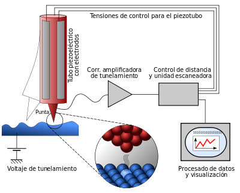

Publicado en 2012
Pos-higgsteria
- 2012-11-28
A pesar del tiempo transcurrido desde el anuncio oficial del CERN, el 4 de Julio de 2012, sobre el descubrimiento de un nuevo bosón masivo que sería candidato al tan elusivo bosón de Higgs, el tema sigue dando de que hablar.
Cantante virtual sensación
- 2012-09-25
Como toda una historia futurista y ciencia ficción, como la de William Gibson es su obra Idoru que en japones significa «ídolo», una cantante totalmente virtual se encuentra en el top de ventas de las listas japonesas, y ademas da increíbles conciertos a sus seguidores.

Marte nos trasnocha
- 2012-08-06
Con este lema (#MarteNosTrasnocha popularizado como hashtag en las redes twitter y google+), el Planetario Jesus Emilio Ramirez de la ciudad de Medellín nos convoca a participar hoy de uno de los eventos más esperados por la comunidad astronómica mundial. Aficionados y profesionales de la astronomía se reunirán hoy desde las 8pm en el planetario a ver la transmisión en directo de NASA JPL (si deseas ver la transmisión, puedes dar click en el link) de la llegada del Mars Curiosity a marte.
Nostalgia
- 2012-06-22
Es el inevitable y fijo paso del tiempo, una maquinaria de evolución, recuerdos y olvidos.
La evolución en los griegos
- 2012-05-13
Hablando un poco de la evolución biológica el día de ayer, dando inicio a las actividades del ciclo de astrobiología en el Club Orión, se genero la inquietud sobre el origen griego de la evolución, motivo por el cual me di a la tarea de buscar un poco y realizar esta breve reseña.
Evolution in the Greeks
- 2012-05-13
Speaking a little about biological evolution yesterday, starting the activities of the astrobiology cycle at the Orión Club, the concern about the Greek origin of evolution arose, which is why I took the task of looking for a little and making this brief review.
Viendo carga molecular
- 2012-02-28
Científicos de IBM fueron capaz de medir por primera vez la distribución de carga de una molécula individual. Este logro permitirá dar nuevas luces acerca de la formación de enlaces entre átomos y moléculas, así como el estudio de distribución electrónicas con estructuras moleculares funcionales.
El último tránsito de Venus
- 2012-02-26
Retomando el blog después de cierto tiempo de abandono por diversos motivos, volvemos con las cosas que nos gustan, ciencia, tecnología y otras curiosidades geeks.